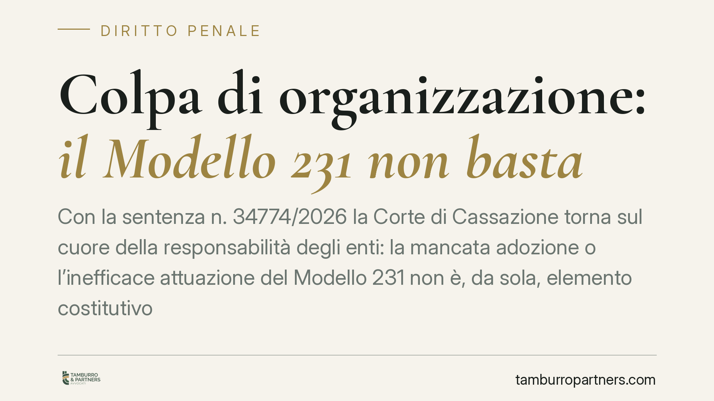

Colpa di organizzazione: il Modello 231 non basta
Con la sentenza n. 34774/2026 la Corte di Cassazione torna sul cuore della responsabilità degli enti: la mancata adozione o l'inefficace attuazione del Modello 231 non è, da sola, elemento costitutivo dell'illecito. È solo uno degli indizi della colpa di organizzazione, che il giudice deve valutare nel suo insieme. Un chiarimento rilevante, specie alla luce della riforma del sistema 231.

Il caso
La vicenda riguarda alcune società beneficiarie di contributi pubblici erogati dalla Regione Siciliana, i cui legali rappresentanti erano accusati di indebita percezione di erogazioni a danno dello Stato (art. 640 bis c.p.). Alla contestazione penale verso le persone fisiche si affiancava l'addebito di responsabilità amministrativa a carico degli enti, ai sensi del D.lgs. 231/2001.
Il nodo discusso davanti alla Terza Sezione Penale era classico: fino a che punto l'assenza di un Modello di organizzazione, gestione e controllo è sufficiente a far scattare la responsabilità della società.
Inquadramento normativo
Il D.lgs. 231/2001 introduce una responsabilità dell'ente per i reati commessi nel suo interesse o a suo vantaggio da soggetti in posizione apicale (art. 6) o sottoposti all'altrui direzione (art. 7). Il meccanismo non punisce automaticamente l'ente: richiede un collegamento tra il reato e un difetto organizzativo imputabile alla società.
Il Modello 231 è lo strumento che l'ente può adottare per prevenire quei reati. La sua funzione, però, è prevalentemente esimente: se correttamente predisposto e attuato, può escludere o ridurre la responsabilità. L'equazione inversa — "niente Modello, quindi ente responsabile" — non trova riscontro nel testo normativo.
La Cassazione ribadisce proprio questo principio. La cosiddetta colpa di organizzazione è l'effettivo criterio di imputazione: consiste nel rimprovero mosso all'ente per non essersi dotato di un assetto idoneo a prevenire reati di quel tipo. La mancanza del Modello è un indice, non la prova. Il giudice deve accertare in concreto se la struttura aziendale fosse carente e se quel deficit abbia reso possibile il reato.
Implicazioni pratiche
La pronuncia sposta l'attenzione dal dato formale a quello sostanziale. Non conta solo avere un documento intitolato "Modello 231": conta avere un sistema di controllo realmente funzionante e coerente con i rischi specifici dell'attività.
Due conseguenze concrete.
Per l'accusa, non è sufficiente dimostrare l'assenza del Modello per ottenere la condanna dell'ente. Deve provare la colpa di organizzazione nel suo complesso: quali presidi mancavano, come quell'assenza ha agevolato la commissione del reato.
Per la difesa dell'ente, si apre uno spazio argomentativo importante. Anche in assenza di un Modello formalizzato, l'azienda può dimostrare di aver comunque adottato procedure, controlli e prassi idonee a contenere il rischio. Al contrario, un Modello esteticamente completo ma mai attuato non offre alcuna protezione: la sua inefficace attuazione pesa quanto l'assenza.
Il principio assume ulteriore rilievo alla luce della riforma del sistema 231, che spinge verso una valutazione più sostanziale e meno formalistica dell'adeguatezza organizzativa. La direzione tracciata dalla giurisprudenza e dal legislatore converge: ciò che rileva è l'effettività dei presidi, non la loro esistenza cartacea.
Cosa fare in concreto
- Verificate l'effettiva attuazione del Modello, non solo la sua esistenza. Un documento mai aggiornato o mai applicato espone l'ente quanto la sua assenza.
- Mappate i rischi reali della vostra attività, con particolare attenzione ai rapporti con la pubblica amministrazione e all'accesso a contributi ed erogazioni pubbliche.
- Documentate i controlli adottati: tracciabilità delle decisioni, flussi informativi verso l'Organismo di Vigilanza, verifiche periodiche. In sede processuale questa documentazione diventa decisiva.
- Rivedete periodicamente l'assetto organizzativo, soprattutto dopo modifiche dell'attività, ingresso in nuovi mercati o accesso a nuove fonti di finanziamento pubblico.
- Formate il personale sui presidi esistenti: un sistema ignorato dagli operatori è, nei fatti, un sistema inattuato.
La sentenza non riduce la rilevanza del Modello 231, ma ne precisa il ruolo. La protezione non nasce dal possesso di un documento, bensì dalla capacità dimostrabile dell'organizzazione di prevenire i reati che la riguardano.
Disclaimer
Contributo informativo a cura di Tamburro & Partners - Avv. Giuseppe Tamburro. Non costituisce parere legale.
Ogni condominio ha una storia a sé.
Se gestisci un'amministrazione e vuoi un confronto su una specifica questione condominiale, scrivi allo studio. Ti rispondiamo entro un giorno lavorativo.